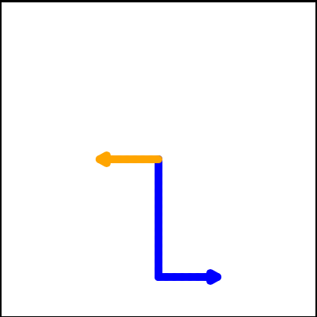
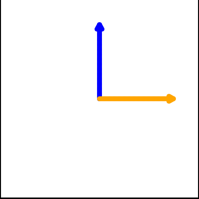
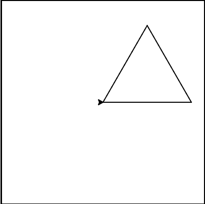
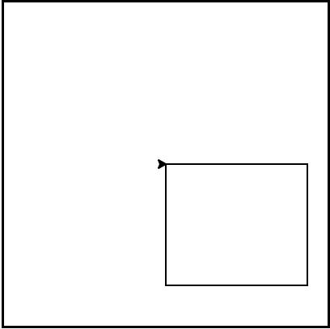

10. Plusieurs tortues et boucles for¶
Aperçu rapide de la journée
Découvrez comment déplacer plusieurs tortues dans le même programme. Présenter la boucle for et utilisez la fonction range() pour simplifier la création de grandes boucles for.
- CS20-CP1 Apply various problem-solving strategies to solve programming problems throughout Computer Science 20.
- CS20-FP1 Utilize different data types, including integer, floating point, Boolean and string, to solve programming problems.
- CS20-FP2 Investigate how control structures affect program flow.
- CS20-FP4 Investigate one-dimensional arrays and their applications.
10.1. Instances — Un troupeau de tortues¶
Tout comme nous pouvons avoir plusieurs nombres entiers différents dans un programme, nous pouvons avoir plusieurs tortues. Chacun d’entre eux est un objet indépendant, et nous appelons chacun une instance de la classe du type Turtle. Chaque instance a ses propres attributs et méthodes - ainsi alex pourrait dessiner avec un mince stylo noir et se trouver à une certaine position, tandis que tess pourrait se diriger dans sa propre direction avec un gros stylo rose. Voici donc ce qui se passe quand alex complète un carré et que tess complète un triangle:
Voici quelques observation qui aide à penser comme un informaticien:
- Nous aurions pu laisser le dernier virage pour alex, mais cela n’aurait pas été aussi satisfaisant. Si on vous demande de dessiner une forme fermée comme un carré ou un rectangle, il est judicieux de terminer tous les tours et de laisser la tortue à son point de départ, dans la même direction que celle dans laquelle elle a démarré. Cela rend le programme et la composition de morceaux de code dans de plus gros programmes plus facile à créer pour nous les humains!
- Nous avons fait la même chose avec tess: elle a tracé son triangle et elle a parcouru 360 degrés. Puis nous l’avons retournée et l’avons déplacée de l’origine. Même la ligne vierge 21 indique comment fonctionne le découpage mental du programmeur: en gros, les mouvements de tess ont été divisés en “tracer le triangle” (lignes 15-20) puis “s’éloigner de l’origine” ( lignes 22 et 23).
- L’une des principales utilisations des commentaires est d’enregistrer votre découpage mental et vos grandes idées. Ils ne sont pas toujours explicites dans le code.
10.1.1. Programmes mélangés - Mixed Up Programs¶
intro-for-loops1: Le programme suivant contient une tortue "jamal", tracez un L majuscule en bleu, puis une autre, "tina", tracez une ligne à l'ouest en orange, comme indiqué à gauche, . Le programme doit faire tous les réglages, faire "jamal" tracer le L, puis "tina" tracer la ligne. Enfin, il faut définir la fermeture de la fenêtre lorsque l'utilisateur clique dessus.
Faites glisser les blocs d'instructions de la colonne de gauche à la colonne de droite et placez-les dans le bon ordre. Cliquez ensuite sur Check Me pour voir si vous avez raison. On vous dira si certaines des lignes sont dans le mauvais ordre.
import turtle
wn = turtle.Screen()
---
jamal = turtle.Turtle()
jamal.pensize(10)
jamal.color("blue")
jamal.right(90)
jamal.forward(150)
---
jamal.left(90)
jamal.forward(75)
---
tina = turtle.Turtle()
tina.pensize(10)
tina.color("orange")
tina.left(180)
tina.forward(75)
---
wn.exitonclick()
intro-for-loops2: Le programme suivant contient une tortue "jamal", tracez une ligne au nord en bleu puis une autre, "tina", une ligne à l'est en orange, comme indiqué à gauche, . Le programme doit importer le module tortue, obtenir la fenêtre sur laquelle dessiner, créer la tortue "jamal", la faire tracer une ligne au nord, puis créer la tortue "tina" et la faire tracer une ligne à l'est. Enfin, il convient de définir la fermeture de la fenêtre lorsque l'utilisateur clique dessus.
Faites glisser les blocs d'instructions de la colonne de gauche à la colonne de droite et placez-les dans le bon ordre. Cliquez ensuite sur Check Me pour voir si vous avez raison. On vous dira si certaines des lignes sont dans le mauvais ordre.
import turtle
---
wn = turtle.Screen()
---
jamal = turtle.Turtle()
jamal.color("blue")
jamal.pensize(10)
---
jamal.left(90)
jamal.forward(150)
---
tina = turtle.Turtle()
tina.pensize(10)
tina.color("orange")
tina.forward(150)
---
wn.exitonclick()
10.2. La boucle for Loop¶
Quand nous avons dessiné un carré durant la dernière leçon, c’était très long, presque pénible. Nous avons dû bouger puis tourner, bouger puis tourner, etc. etc. quatre fois. Si nous dessinions un hexagone, un octogone ou un polygone à 42 côtés, cela aurait été un cauchemar de dupliquer tout ce code.
Comme nous l’avons vu précédemment, utiliser itération pour répéter le code à plusieurs reprises peut résoudre le problème de copier/coller de code rencontré lors de la révision de code.
En Python, l’instruction for nous permet d’écrire des programmes qui implémentent l’itération. À titre d’exemple simple, supposons que nous avons des amis et que nous aimerions leur envoyer chacun un courrier électronique les invitant à notre fête. Nous ne savons pas encore comment envoyer un email, alors pour le moment, nous allons simplement imprimer un message pour chaque ami.
Jetez un coup d’oeil à la sortie produite lorsque vous appuyez sur le bouton run. Il y a une ligne imprimée pour chaque ami. Voici comment ça fonctionne:
- nom dans cette déclaration
forest appelé variable de boucle. - La liste des noms entre crochets s’appelle une liste Python. Les listes sont très utiles. Nous aurons beaucoup plus à dire à leur sujet plus tard.
- La ligne 2 est le corps de la boucle/*loop body*. Le corps de la boucle est toujours en retrait. L’indentation détermine exactement quelles instructions sont “dans la boucle”. Le corps de la boucle est exécuté une fois pour chaque nom de la liste.
- à chaque itération ou passe de la boucle, une vérification est effectuée pour voir s’il reste encore des éléments à traiter. S’il n’en reste aucun (c’est ce qu’on appelle la condition de fin/*terminating condition* de la boucle), la boucle est terminée. L’exécution du programme se poursuit à l’instruction suivante après le corps de la boucle.
- S’il reste des éléments à traiter, la variable de boucle est mise à jour pour faire référence à l’élément suivant de la liste. Cela signifie que, dans ce cas, le corps de la boucle est exécuté ici 7 fois et chaque fois,
nomfera référence à un ami différent. - A la fin de chaque exécution du corps de la boucle, Python retourne à l’instruction
for, pour voir s’il y a plus d’éléments à gérer.
Une démonstration de codelens est un bon moyen de vous aider à visualiser exactement comment le flux de contrôle fonctionne avec la boucle for. Cliquez sur le bouton Show CodeLens dans l’exemple ci-dessus. Essayez d’avancer et de revenir en arrière dans le programme en appuyant sur les boutons. Vous pouvez voir la valeur de nom changer pendant que la boucle parcourt la liste d’amis.
Note
Bien que vous ne souhaitiez pas vous inquiéter pour le moment, il est vraiment utile de savoir que vous pouvez accéder à n’importe quelle partie de la liste en fournissant sa valeur d’index entre crochets, comme ``une_liste[2]``( le premier élément a un indice de 0, le second un indice de 1, etc.). Considérer ce qui suit:
names = ["James", "Malindu", "Michelle", "Zoe", "Eli", "Bree"]
print(names[0]) # va imprimer James
print(names[3]) # va imprimer Zoe
10.3. Itération simplifie notre programme de tortue¶
Pour dessiner un carré, nous aimerions faire la même chose quatre fois: déplacez la tortue vers l’avant et tournez de 90 degrés. Nous avons précédemment utilisé 8 lignes de code Python pour faire dessiner par alex les quatre côtés d’un carré. Le programme suivant fait exactement la même chose mais, à l’aide de la déclaration for, n’utilise que trois lignes (sans le code de configuration). Rappelez-vous que l’instruction for répètera forward et left quatre fois, une fois pour chaque valeur de la liste.
Bien que “sauvegarder quelques lignes de code” puisse être pratique, ce n’est pas le gros problème ici. Ce qui est beaucoup plus important, c’est que nous avons trouvé un “patron répétitif” et que nous avons réorganisé notre programme pour le répéter. Trouver les morceaux et organiser d’une manière ou d’une autre nos programmes autour de ces morceaux est une compétence vitale pour apprendre Comment penser comme un informaticien.
Il est également important de réaliser que nous aurions pu utiliser une boucle while pour réaliser le même dessin, et une version qui le fait est la suivante:
Notez que, bien que ce code fasse la même chose que la version de la boucle for, il nécessite un code supplémentaire par rapport à la version de la boucle for. En règle générale, si vous savez à l’avance combien de fois une boucle doit être itérée, vous devez utiliser une boucle for (par exemple, itérer 4 fois pour dessiner un carré). Si vous ne savez pas à l’avance combien de fois une boucle doit itérer, une boucle while est un meilleur choix (par exemple, itérer jusqu’à ce que Reeborg ait un mur devant lui).
En repensant à la version de la boucle for que nous avons vue ci-dessus, les valeurs [0,1,2,3] ont été fournies pour que le corps de la boucle s’exécute 4 fois. Nous aurions pu utiliser autre valeurs pour les quatres valeurs. Par exemple, considérons le programme suivant.
Dans l’exemple précédent, il y avait quatre entiers dans la liste. Cette fois, il y a quatre chaînes. Puisqu’il y a quatre éléments dans la liste, l’itération aura lieu quatre fois. des_couleurs prendra chacune des couleurs de la liste. Nous pouvons même aller un peu plus loin et utiliser la valeur de des_couleurs dans l’exécution du code.
Dans ce cas, la valeur de des_couleurs est utilisée pour modifier l’attribut de couleur de alex. À chaque itération, des_couleurs passe à la valeur suivante de la liste.
10.3.1. Programmes mixtes¶
intro-for-loops3: Le programme suivant utilise une tortue pour dessiner un triangle comme celui à la gauche,  mais les lignes sont mélangées. Le programme doit faire tous les réglages nécessaires et créer la tortue. Après cela, itérer (passe par la boucle) 3 fois, et la tortue doit avancer de 175 pixels, puis à gauche à 120 degrés à chaque fois qu'on passe par la boucle. Après la boucle, configurez la fenêtre pour qu'elle se ferme lorsque l'utilisateur clique dessus.
Faites glisser les blocs d'instructions de la colonne de gauche vers la colonne de droite et placez-les dans le bon ordre. indention. Cliquez sur Check Me pour voir si vous avez raison. On vous dira si l’une des lignes est dans le mauvais ordre ou mal mise en retrait.
import turtle
---
wn = turtle.Screen()
marie = turtle.Turtle()
---
# répéter 3 fois
for i in [0,1,2]:
---
marie.forward(175)
---
marie.left(120)
---
wn.exitonclick()
intro-for-loops4: Le programme suivant utilise une tortue pour dessiner un rectangle comme celui à la gauche,  mais les lignes sont mélangées. Le programme doit faire tous les réglages nécessaires et créer la tortue. Après cela, itérer (passe par la boucle) 2 fois, et chaque fois qu'on passe par la boucle, la tortue devrait avancer de 175 pixels, tourner à droite de 90 degrés, avancer de 150 pixels et tourner à droite de 90 degrés. Après la boucle, configurez la fenêtre pour qu'elle se ferme lorsque l'utilisateur clique dessus.
Faites glisser les blocs d'instructions de la colonne de gauche vers la colonne de droite et placez-les dans le bon ordre. indention. Cliquez sur Check Me pour voir si vous avez raison. On vous dira si l’une des lignes est dans le mauvais ordre ou mal mise en retrait.
import turtle
wn = turtle.Screen()
carlos = turtle.Turtle()
---
# répéter 2 fois
for i in [1,2]:
---
carlos.forward(175)
---
carlos.right(90)
---
carlos.forward(150)
carlos.right(90)
---
wn.exitonclick()
Vérifie ta compréhension
- 1
- le corps de la boucle imprime une ligne, mais il s'exécutera seulement une fois pour chaque élément de la liste [5, 4, 3, 2, 1, 0].
- 5
- Bien que le plus grand nombre dans la liste soit 5, il y a actuellement 6 éléments dans la liste.
- 6
- le corps de la boucle sera exécuté (et imprimera une ligne) pour chacun des 6 éléments de la liste [5, 4, 3, 2, 1, 0].
- 10
- le corps de la boucle ne s'exécutera pas plus de fois que le nombre d'éléments de la liste.
intro-for-loops5: Dans le code suivant, combien de lignes sera imprimé par ce code?
for nombre in [5, 4, 3, 2, 1, 0]:
print("J'ai", nombre, "biscuits. Je vais en manger un.")
-
intro-for-loops6: Comment python sait-il quelles instructions sont contenues dans le corps de la boucle?
- Ils sont indentés au même degré que l'en-tête de la boucle.
- le corps de la boucle peut avoir n'importe quel nombre de lignes, toutes indenté à partir de l'en-tête de la boucle.
- Il y a toujours exactement une ligne dans le corps de la boucle.
- le corps de la boucle peut avoir plus qu'une ligne.
- Le corps de la boucle se termine par un point-virgule (;) qui n'apparaît pas dans le code ci-dessus.
- Python n'a pas besoin de point-virgule dans sa syntaxe, mais dépend principalement sur l'indentation.
- 2
- Python attribue à nombre la valeur des éléments de la liste, l'un après l'autre, en ordre (de gauche à droite). nombre obtient une nouvelle valeur chaque fois que la boucle se répète.
- 4
- Oui, Python traitera les éléments de gauche à droite, donc la première fois, la valeur de number est 5 et la deuxième fois, elle est 4.
- 5
- Python attribue à number la valeur des éléments de la liste, l'un après l'autre, en ordre. nombre obtient une nouvelle valeur chaque fois que la boucle se répète.
- 1
- Python attribue à number la valeur des éléments de la liste, l'un après l'autre, en ordre (de gauche à droite). nombre obtient une nouvelle valeur chaque fois que la boucle se répète.
intro-for-loops7: Dans le code suivant, quelle est la valeur de nombre la deuxième fois que Python exécute la boucle?
for nombre in [5, 4, 3, 2, 1, 0]:
print("J'ai", nombre, "biscuits. Je vais en manger un.")
10.4. La fonction de portée - The Range Function¶
La génération de listes avec un nombre spécifique d’entiers est très commun, surtout lorsque vous voulez écrire une simple itération contrôlée nommée for loop. Même si vous pouvez utiliser quatre éléments ou quatre nombres entiers, le plus classique est d’utiliser une liste d’entiers commençant par 0. En fait, ces listes sont si populaires que Python donne une fonctions prédéfini range pouvant transmettre une séquence de valeurs à la boucle for. Lorsqu’elle est appelée avec un paramètre, la séquence fournie par range commence toujours par 0. Si vous demandez range(4), vous obtiendrez 4 valeurs commençant par 0. En d’autres termes, 0, 1 , 2 et enfin 3. Notez que 4 n’est pas inclus puisqu’on commence avec 0. De même, range(10) fournit 10 valeurs, comprises entre 0 et 9.
for i in range(4):
# Exécute le corps avec i = 0, puis 1, puis 2, puis 3
for x in range(10):
# définit x comme chacun des ... [0, 1, 2, 3, 4, 5, 6, 7, 8, 9]
Note
Les informaticiens aiment compter à partir de 0!
Donc, pour répéter quelque chose quatre fois, un bon programmeur Python ferait ceci:
for i in range(4):
alex.forward(50)
alex.left(90)
10.5. Problèmes de pratique¶
Essayez les problèmes de pratique suivants. Vous pouvez travailler directement sur le site ou utiliser Thonny. Quoi qu’il en soit, veillez enregistrer votre solution dans votre dossier Informaqique 20 lorsque vous avez terminé!
La documentation Python du module tortue pourrait vous être utile: https://docs.python.org/3/library/turtle.html.
10.5.1. Polygones réguliers¶
Créez un programme qui utilise les boucles for pour que la tortue dessine des polygones réguliers (normal signifie que tous les côtés ont les mêmes longueurs et les mêmes angles). Tout d’abord, demandez à l’utilisateur combien de côtés il souhaite que le polygone ait et quelle longueur doit avoir chaque côté. Dessinez maintenant le polygone régulier qui répond aux exigences de l’utilisateur!
Note
N’oubliez pas que dans un polygone régulier, la somme des angles intérieurs du polygone sera toujours de 360 degrés.
10.5.2. Dessiner une étoile¶
Créez un programme qui utilise le module tortue pour dessiner une étoile à cinq sommets. L’utilisateur doit pouvoir définir un certain nombre d’options chaque fois que le code est exécuté. Le programme doit donc lui demander:
- la largeur du stylo de la tortue
- la couleur de la tortue
- la longueur des côtés de l’étoile qui sera dessinée
- la couleur de fond à utiliser
Une exécution du programme peut produire une étoile ressemblant à ceci:

10.5.3. Dessiner une horloge¶
Créez un programme qui utilise le module tortue pour dessiner la forme d’une horloge analogique. Faites ceci en utilisant SEULEMENT un objet TURTLE. Cela devrait ressembler à ceci:

Vous devrez peut-être explorer la documentation Turtle sur le site Web Python Docs pour savoir comment laisser une image de l’emplacement de la tortue.